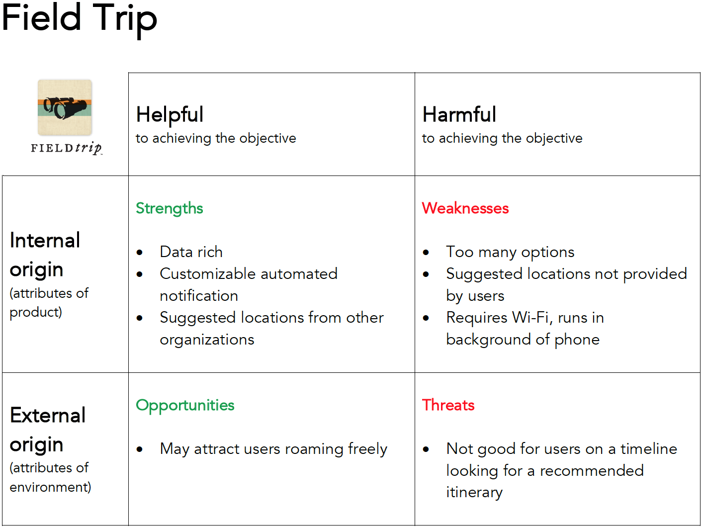
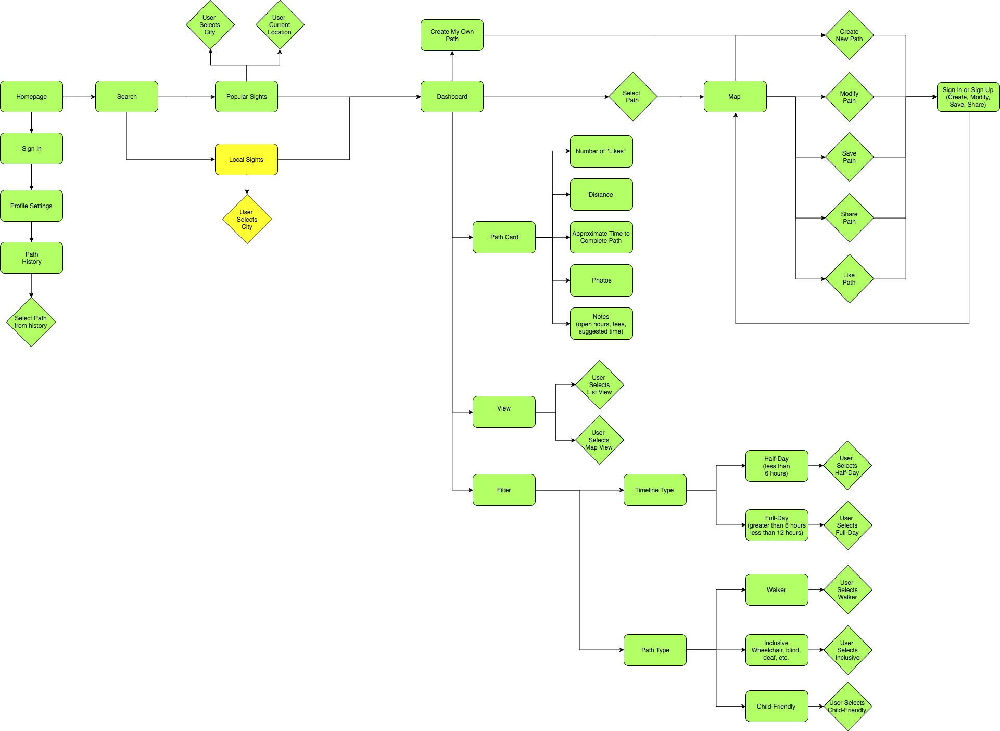
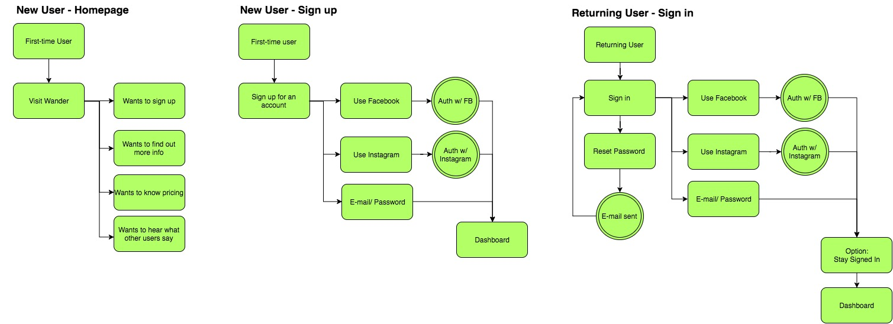

Wander
Wander
UX Research & Design: giving people more control over their map experience
UX Researcher and Designer: Neil Ranada
Project time: 4 months
Project location: San Diego, CA
Summary
Do you love to travel? A well-planned walking path is one of the best ways see things, especially if you’re tight on time. I designed an Android travel app called Wander to make it easier to plan walking paths.
Problem
Most travel apps rely on computer-generated walking paths. Sometimes these paths don’t make sense, are unsafe, or not exactly what you want to do. Most frustratingly, travel apps give you little control to make changes.
Solution
Dial back technology and use a time-tested way of getting directions: drawing on a map. Digital maps with routes drawn by people, not computers.
Wander is an Android platform that allows people to create, select, edit, vote, and share walking paths. The goal is to give users more control.
Discovery
I once went on a solo adventure to Kyoto, Japan. The old capital is full of incredible history and sights. I underestimated its vastness and only had two and a half days to see it.
Fushimi Inari Shrine, Kyoto, Japan. Photo by Neil Ranada.
Golden Pavilion, Kyoto, Japan. Photo by Neil Ranada.
Higashiyama Historic District, Kyoto, Japan. Photo by Neil Ranada.
It turns out Kyoto is a walkable city. A Japanese travel guide gave me paper maps breaking down the city into sections. Each map section showed suggested walking routes. But it was raining, and it became a pain to use my rain-soaked maps without tearing them apart.

Koyoto Walks paper map. Source: http://www.jnto.go.jp
I tried using Kyoto’s travel website instead. It has digital maps with similar walking routes. But it wasn’t mobile-friendly and I couldn’t expand the maps to fill the full size of my phone’s screen.
Kyoto digital walking map. Source: http://www.japan-guide.com
Why couldn’t I have a mobile-friendly map with walking paths? Did other people have the same problem?
Research
First, I needed to figure out if there was an opportunity to solve a problem. I can’t design solutions for a problem that doesn’t exist.
I started my research by making an assumption: people need a travel app that makes it easier for them to plan walking paths. To validate this, I needed to answer three questions:
- Is there a need for a tool to make it easier to plan walking paths?
- If so, who needs it?
- What features do they need?
I conducted two surveys and two rounds of interviews to find answers. I asked questions focused on past experiences and behaviors. I also wanted to know any frustrations people had with travel planning tools.
First Survey
I posted a survey online to various social media platforms and public forums. I asked general questions about people's last sightseeing experience. I didn't mention anything about walking paths at this point. I wanted to see what problems or successes people would share that I may not have considered.
Here are my key findings from the 19 responses:
- 100% said they used smartphones to browse websites to plan sightseeing.
- A majority used Google Search (89%) and TripAdvisor (84%) for research.
- Fewer people used social media in their travel research: Facebook (21%) and Instagram (21%).
- People used Facebook (79%) and Instagram (47%) to post travel photos.
- When asked to select one experience that needed improvement: "planning route and schedule" was the top issue.
Mobile-first and the need for more research
Based on the results, it wasn't clear if there was a need for a tool to make walking paths easier to plan. However, if there was a need, it was clear that I needed to use a "mobile first" design approach. It was also clear that I needed to learn how people used Google Search and TripAdvisor for travel research.
Social media played less of a role in travel research than I expected. But, I still think there may be an opportunity to discover a greater connection between maps and social media, especially since Instagram is full of photo feeds for travel inspiration. I decided it was beyond the scope of this project but may be worth researching another time.
Interviews
During this project, I took a two-week trip to the Philippines to attend a wedding on Boracay Island. Many of my friends also attended. Different groups had separate plans for sightseeing before and after the wedding. It was the perfect opportunity to make observations and conduct interviews.
Here are key findings from interviewing 12 people:
- People used Google Search or TripAdvisor to find and compare lists of top things to see and do.
- Planning tended to stop at the city level in their search. Once in Manila, people weren't sure of what places they wanted to see. If they did have an idea, they weren't sure of the best order to see everything in a short period.
- Everyone's definition of sightseeing varied. Some people wanted to walk around historical places like the Intramuros, an old walled city. Others wanted to see street markets or the giant Mall of Asia.
- People on this trip relied on Google Maps to walk from point to point. They didn't have a walking path in mind.
“Point-to-point” navigators vs. “Planners”
There’s a spectrum of how people navigate. On one end, there are what I call “point-to-point” navigators and on the other end “planners.” People on this trip leaned towards being “point-to-point” navigators. Navigating to one place at a time using Google Maps. They didn’t necessarily need a walking path with all their stops planned out.
There wasn’t evidence at this point to design a walking path tool. To move forward, I needed to find and interview “planners.” People who like having itineraries.
Second survey
Before conducting another set of interviews, I posted another survey. This time, I asked specific questions about what tools people used to plan walking paths. I provided both digital and paper options. I also needed to know what they liked most about these tools, and what they liked least.
Here are key findings from the 32 responses:
- Travel apps like Google Trips (6%), Cool Cousin (3%), and FieldTrip (1%) are not popular tools for planning walking paths.
Here is a selection of comments:
- “I don't think there is an obvious way to customize my route. I think I can create a route but it seems complicated.”
- “It can take me to shady places...”
- “Lack of suggested routes/plans to cover various sight-seeing points.”
- “When I'm abroad and don't have mobile internet access, or I'm in a heavily pedestrian urban area (like Marrakech) where the maps may not be detailed enough, then Google Maps fails me. That's when I turn to paper maps of some sort, or maybe an offline map intended for travelers if I don't need to worry about having my phone out.”
Realizing an opportunity to solve a problem
After the second round of surveys, I realized that some apps fall short in planning walking paths. There were two main pain points:
- Feeling unsafe
- Inability to easily create and edit a path
At this point, I realized an opportunity to design a tool for people who are most likely to use route suggestions to cover various sight-seeing points.
Personas
I identified three people to interview who plan their travels in advance. These are people who I assessed would benefit most from a tool for planning walking paths.


Top 3 goals of the user personas
- Discover itineraries that match their interests and schedule
- Easily edit their path and points of interest
- Follow a route but also have the freedom to explore
I based my decisions around these three goals throughout my design process. Next, I needed to learn from the competition.
Competitive Analysis
I analyzed the strengths and weaknesses of travel app competitors. I identified six travel apps: TripAdvisor, Google Trips, Walc, FieldTrip, Cool Cousin, and Triposo.
I conducted SWOT analysis, creating matrixes such as the one below, to assess the strengths, weaknesses, opportunities, and threats of each app.
I also downloaded Triposo. Out of the list of travel apps I analyzed, Triposo had the most advanced tool for planning a walking route to multiple sightseeing points.
Screenshot from Triposo iPhone app.
Top three strengths to include in the design:
- Crowd-sourcing to provide self-sustaining content production
- Voting system to let people decide what is most helpful
- Integration with Google Maps because its database is extensive and trustworthy
Top three weaknesses to avoid in the design:
- Overwhelming number of features and information
- Computer generated routes that are unsafe or do not make sense
- Making it difficult for people to edit a path and change points of interest
Field research at Balboa Park, San Diego
I also took advantage of the fact that I live in San Diego, a major tourist destination. I spent several mornings and afternoons at Balboa Park. I hung out next to maps posted throughout the park. I casually interviewed people to find out what they were searching. I also wanted to see what they thought was helpful, and what was frustrating.
Time tested way of finding directions
People still rely on friends, or even strangers, to find directions. This reinforced the crowd-sourcing and social approach in the design.
Sometimes the best way to find where you’re going is to ask someone who can draw directions for you on a paper map. With this in mind, I needed to design a digital version of this time-tested method of getting directions.
It also occurred to me that not everyone walks on paths. Sometimes people move around on wheels: wheelchairs, scooters, bikes, skates. Which reminded me that I needed to push for an inclusive design.
Central fountain, Balboa Park, San Diego. Photos by Neil Ranada.
Meeting research goals
- Is there a need for a tool to make it easier to plan walking paths?
Yes - Who needs it?
People who plan travel itineraries like the three user personas. - What features do they need?
A platform that allows people to create, select, edit, vote, and share walking paths.
Design
After conducting user research and defining the problem, I was ready to move forward and create design solutions.
User Stories
I created a spreadsheet with a list of tasks to meet the goals of the user personas.
"As a __________, I want to __________ so that I can __________."

User flows
I created User Flows to visually depict how people complete each task listed in the User Stories.
Search flow
Map view flow
Onboarding flow

Wireframes
I spent the majority of my time creating wireframes to focus on the functionality of the travel app. I sketched using pen and paper which let me put my design ideas down quickly. For inspiration, I looked to patterns found in popular apps such as TripAdvisor and Airbnb.
I went through each user story and wrote the task in the top left corner of each page to focus on the specific problem I needed to solve.
Here are a couple of early wireframe sketches attempting to solve for the user story:
"As a user...I want to search recommended paths...so that I can find the best way to see popular sights"
Cards view flowing to a map view.
List view flowing to information and photo for a point of interest.
User testing later revealed that I needed to use a blend of the two ideas above. A list for easier skimming instead of cards. And a map view instead of an info page with photos, because that’s what testers expected after selecting a path.
The most challenging problem I focused on was how people could seamlessly make changes to customize their walking path. Here is a progression of wireframe sketches designing for the user story:
“As a user…I want to change the path on my map…so that I can modify my path.”
Early version.
Later version.
Testing revealed that most people could not associate the unlabeled Floating Action Button with making changes to a path. I discuss this issue later under the "Testing" section.
GET IN TOUCH